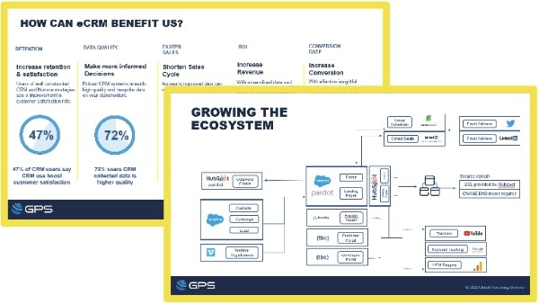
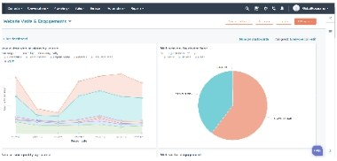

Global Processing Services (now Thredd) · Payments
eCRM & Web Platform Transformation
A 12-month roadmap that moved a payments business from a standalone WordPress site to an integrated HubSpot and Salesforce ecosystem — connecting web, CRM, automation and attribution across the GTM stack.
- 12-montheCRM & web transformation roadmap
- WordPress → HubSpotWebsite and CRM migration
- HubSpot + SalesforceIntegrated marketing & sales data
The challenge
Website operations, lead data, marketing journeys and performance reporting sat in separate tools. Sales and marketing could not work from shared information, attribution was unreliable and campaign follow-up depended on manual effort.
Objective
Unify the web and CRM estate so the business could capture leads reliably, follow them up automatically, attribute pipeline to activity and give teams one connected view of the customer.
Approach
Business case & roadmap
Set out how eCRM would improve retention, data quality, sales-cycle speed and conversion, and turned it into a 12-month web and eCRM strategy.
Platform migration
Led the move from WordPress into a HubSpot-led web environment integrated with Salesforce, including web management and domain and DNS processes.
Integration & automation
Built automated lead capture and nurture workflows and connected platforms through integrations, APIs and webhooks where relevant.
Adoption & measurement
Configured the CRM, analytics dashboards and tracking, improved attribution across the GTM stack, and onboarded and trained stakeholders so the new processes stuck.
Outcomes
Marketing and sales moved onto one connected platform: leads are captured and routed automatically, nurture runs without manual effort, and reporting shows how activity turns into pipeline. Onboarding and training meant teams adopted the new processes instead of working around them.

